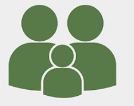
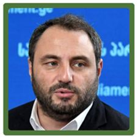
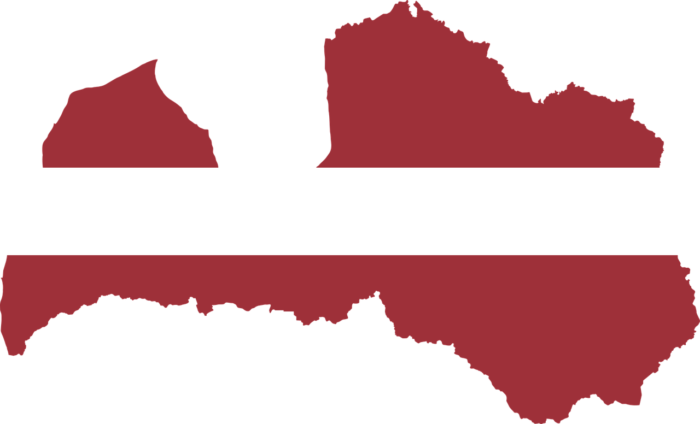
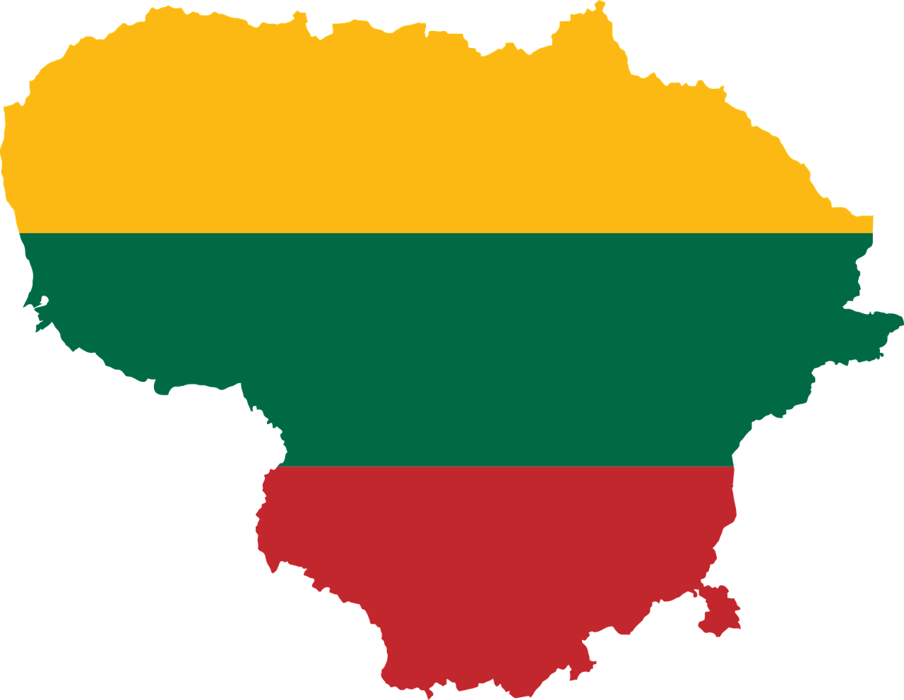
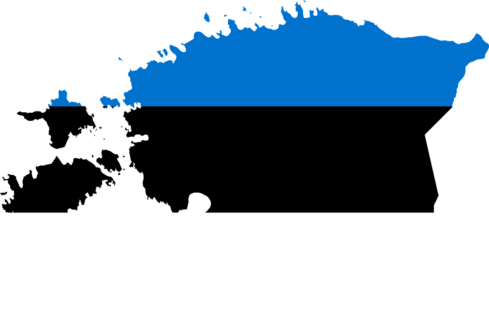
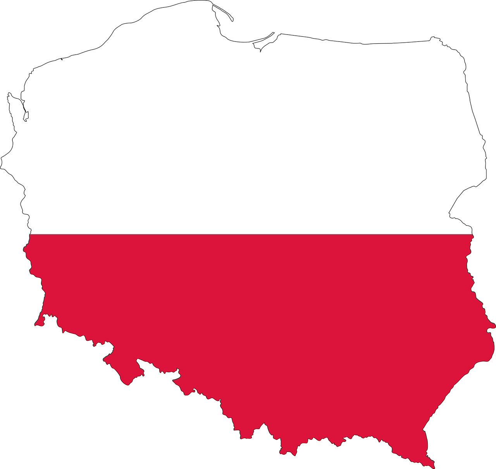

• როგორია სტატისტიკა
ერთ წელიწადში საარსებო შემწეობის მიმღებთა რაოდენობა 22,6%-ით გაიზარდა. სოციალური მომსახურების სააგენტოს ვებ-გვერდზე გამოქვეყნებული სტატისტიკის მიხედვით, 2021 წლის დეკემბერში საარსებო შემწეობას 643 167 ადამიანი იღებდა, ეს კი 118 569-ით მეტია წინა წლის ანალოგიურ პერიოდთან შედარებით. 2020 წლის დეკემბერში სახელმწიფოს დახმარების იმედად 524 598 ადამიანი იყო.
ამასთან, გასულ წელს სოციალური დახმარების მიმღებთა რაოდენობა ყველაზე მეტად სამცხე-ჯავახეთში, აჭარის ავტონომიურ რესპუბლიკასა და ქვემო ქართლში გაიზარდა.
კერძოდ, სოციალური დახმარების მიმღებთა რაოდენობა რეგიონების მიხედვით, ასე გამოიყურება:
მოქმედი მეთოდოლოგიით შეფასებულ ოჯახებზე საარსებო შემწეობის ოდენობებია:

ოჯახის
სარეიტინგო ქულა
<30 001 ქულა
30 001-57 001 ქულა
57 001-60 001 ქულა
60 001-65 001 ქულა
<120 001 ქულა
(16წ.-მდე ასაკის წევრზე) >
თანხა
თითოეულ წევრზე
60 ლარი
50 ლარი
40 ლარი
30 ლარი
100 ლარი
2021 წლის 1 ივლისამდე 100 001-ზე ნაკლები ქულის მქონე ოჯახი, ყოველ 16 წლამდე ასაკის წევრზე იღებდა 50 ლარის ოდენობის შემწეობას, რაც რიგ მუნიციპალიტეტებში (ჩამონათვალი იხილეთ ბმულზე), გაიცემოდა ფულის სახით, ანუ თანხა ირიცხებოდა ოჯახის საბანკო ბარათზე და შესაძლებელი იყო სრულად განაღდება.
გაიცემა საერთო ფორმით
ცაგერის მუნიციპალიტეტი
ახმეტის მუნიციპალიტეტი
გურჯაანის მუნიციპალიტეტი
ლაგოდეხის მუნიციპალიტეტი
სიღნაღის მუნიციპალიტეტი
ბაღდათის მუნიციპალიტეტი
წყალტუბოს მუნიციპალიტეტი
ხარაგაულის მუნიციპალიტეტი
თიანეთის მუნიციპალიტეტი
ქ. ფოთი
ჩხოროწყუს მუნიციპალიტეტი
წალენჯიხის მუნიციპალიტეტი
თეთრიწყაროს მუნიციპალიტეტი
წალკის მუნიციპალიტეტი
გორის მუნიციპალიტეტი
ხაშურის მუნიციპალიტეტი
ოზურგეთის მუნიციპალიტეტი
ამბროლაურის მუნიციპალიტეტი
ონის მუნიციპალიტეტი
თელავის მუნიციპალიტეტი
საგარეჯოს მუნიციპალიტეტი
ყვარლის მუნიციპალიტეტი
ჭიათურის მუნიციპალიტეტი
დუშეთის მუნიციპალიტეტი
აბაშის მუნიციპალიტეტი
სენაკის მუნიციპალიტეტი
ასპინძის მუნიციპალიტეტი
ახალციხის მუნიციპალიტეტი
მარნეულის მუნიციპალიტეტი
ქ. რუსთავი
ქუდის მუნიციპალიტეტი
ხულოს მუნიციპალიტეტი
გაიცემა 20 ლარი საერთო ფორმით
გლდანი-ნაძალადევის რაიონი
დიდუბე-ჩუღურეთის რაიონი
ისანი-სამგორის რაიონი
ვაკე-საბურთალოს რაიონი
ძველი თბილისი - დიდგორის რაიონი
ჩოხატაურის მუნიციპალიტეტი
ლენტეხის მუნიციპალიტეტი
დედოფლისწყაროს მუნიციპალიტეტი
თერჯოლის მუნიციპალიტეტი
სამტრედიის მუნიციპალიტეტი
ტყიბულის მუნიციპალიტეტი
ქ. ქუთაისი
ხონის მუნიციპალიტეტი
მარტივის მუნიციპალიტეტი
მესტიის მუნიციპალიტეტი
ნინოწმინდის მუნიციპალიტეტი
ბოლნისისს მუნიციპალიტეტი
ქარელის მუნიციპალიტეტი
ქ. ბათუმი
ხელვაცაურის მუნიციპალიტეტი
ლანჩხუთის მუნიციპალიტეტი
ვანის მუნიციპალიტეტი
ზესტაფონის მუნიციპალიტეტი
საჩხერის მუნიციპალიტეტი
მცხეთის მუნიციპალიტეტი
ყაზბეგის მუნიციპალიტეტი
გუგდიდის მუნიპალიტეტი
ხობის მუნიციპალიტეტი
ადიგენის მუნიციპალიტეტი
ახალქალაქის მუნიციპალიტეტი
ბორჯომის მუნიციპალიტეტი
გარდაბნის მუნიციპალიტეტი
დმანისის მუნიციპალიტეტი
კასპის მუნიციპალიტეტი
ქობულეთის მუნიციპალიტეტი
შუახევის მუნიციპალიტეტი
2021 წლის 1 ივლისიდან გაუქმდა „ბავშვის კვების ბარათები" და აღნიშნულ ბარათებზე არსებული ნაშთი გადატანილია საარსებო შემწეობის მიმღებთა ბარათებზე.
ფულად დახმარებას ოჯახი მიიღებს, საარსებო შემწეობის დანიშვნის პროცედურის განხორციელების შემდგომ, მინიჭებული სარეიტინგო ქულის ძალაში შესვლის მომდევნო მეორე თვიდან.
• რას ვთავაზობთ სოციალურად დაუცველებს?
Worknet.gov.ge - ეს სახელმწიფო დასაქმების სააგენტოა, სადაც ქვეყნის მასშტაბით, სამსახურის მაძიებლებს შეუძლიათ დარეგისტრირება და სასურველი სასამსახურის მოძიება. თუმცა, აქ მნიშნელოვანი მმართულებაა კონკრეტულად სოციალურად დაუცველთა გადამზადების პროგრამა, რომლის ფარგლებშიც შესაძლებელია სხვადასხვა პროფესიის შესწავლა და შემდეგ დასაქმება.
გადამზადების პროგრამა: პროფესიები
დასაქმების ხელშეწყობის სახელმწიფო სააგენტოს მონაცემებით, ამ დროისთვის, პროფესიული გადამზადების პროგრამაში რეგისტრირებულ სამუშაოს მაძიბელთა საერთო რაოდენობამ 2080 ადამიანი შეადგინა. თბილისის მასშტაბით 1359, ხოლო დანარჩენ რეგიონში - 721.
2021 წლის ბოლოსთვის, სასწავლო კურსი წარმატებით დაასრულა 1512 სამუშაოს მაძიებელმა, რომელთა შორის 295 პირი სოციალურად დაუცველი იყო.
• რა არის გამოსავალი?

პოლიტეკონომისტი, პარლამენტის ყოფილი წევრი ბექა ნაცვლიშვილი, რომელიც ქვეყანაში სოციალურ პოლიტიკას ყოველთვის აქტიურად აკრიტიკებდა და მისი გაუმჯობესების მექანიზმზე აქტიურად მუშაობდა, ამბობს, რომ საბაზისო სოციალური პოლიტიკის განსაზღვრისთვის საჭიროა სოციალური ორიენტირი. საქართველოში კი, დღეს მის ფუნქციას საარსებო მინიმუმი ასრულებს.
როგორც ბექა ნაცვლიშვილი განმარტავს, იმისთვის, რომ ადამიანები სიღარიბიდან ამოვიდნენ, აუცილებელია რეალური საარსებო მინიმუმის განსაზღვრა და კონკრეტული ფინანსური ზღვარის დაწესება, რომლის გადალახვამდე, საარსებო შემწეობის მოხსნა, არ უნდა ხდებოდეს. სხვა შემთხვევაში, არა თუ სოციალური ფონი არ გამოსწორდება, არამედ, სახელმწიფოს გაცილებით ძვირი დაუჯდება მათი შენახვა.
„თუ დავაკვირდებით სტატისტიკას, განსაკუთრებით გაუარესება იწყება კოვიდის პირობებში. ანუ, ასეთი სწრაფი ზრდა უკავშირდება პანდემიას, თუმცა რა თქმა უნდა, ეს დაკავშირებულია ამ მიმართულებით არსებულ პრობლემებთანაც. რეალურად, სახელმწიფოში ჩვენ არ გვაქვს არანაირი გადანაწილების მექანიზმები. ის ადამიანიც კი, ვინც ხელფასს იღებს, მუშაობას და არ არის სოციალურად დაუცველთა ბაზაში, პოტენციურად შეიძლება სოციალურად დაუცველთა ბაზაში აღმოჩნდეს. იმიტომ, რომ საგადასახადო სისტემა გვაქვს მანკიერი. ის იმდენ გადასახადს იხდის, რამდენსაც მაღალ შემოსავლიანი. მისთვის გაცილებთ დაბალი რომ იყოს გადასახადი, ვიდრე მაღალშემოსავლიანისთვის, მისი სიღარიბეში გადავარდნის ალბათობა გაცილებით დაბალი იქნებოდა.
მეორე, არ გვაქვს დადგენილი მინიმალური ხელფასის ოდენობა, რომელიც იქნებოდა იმის გარანტია, რომ სოციალურად დაუცველის სტატუსი მაინც შეუნარჩუნდებოდა.
კიდევ ერთი მთავარი პრობლემაა ის, რომ ჩვენ საზომიც კი არ გვაქვს, ვინ არის სინამდვილეში სოციალურად დაუცველი. ანუ, შემოსავლების მიხედვით კი არ ვზომავთ, ჩვენ ამას პირდაპირი გაგებით, ვითვლით აღჭურვილობის მიხედვით, მაგალითად, აქვს თუ არა მაცივარი, როგორ არის ის მოწყობილი და ა.შ. ეს არის ყველაზე ცუდი დათვლის მექანიზმი. შეიძლება ადამიანს რამე ძველი კარადა ჰქონდა სახლში, რომლის გაყიდვა ვერ მოასწრო, მაგრამ ეს არ ნიშნავს, რომ მას შემოსავალი გააჩნია. სინამდვილეში ფულადი შემოსავალი მას ძალიან მცირე აქვს. როდესაც საარსებო მინიმუმი გაქვს არარეალურად დაბალი და სინამდვილეში, ორჯერ მეტი უნდა იყოს, ყველაზე მარტივი მეთოდოლოგიითაც კი, და ფულადი დახმარება ორიენტირებულია ამ მანკიერ მეთოდოლოგიაზე, სინამდვილეში, პირიქით, ადამიანებს სიღარიბეში ახრჩობს და ამ მექანიზმის საშუალებით ვერ ამოდიან ამ მდგომარეობიდან.
ამასთან, ეკონომიკური ვითარების გაუარესებასთან ერთად, რა თქმა უნდა, უარესდება მათი სოციალური მდგომარეობაც. ამის მიზეზია ინფლაცია, რომელიც დაკავშირებულია ეროვნული ბანკის პოლიტიკასთან, იმიტომ, რომ ჩვენ იმპორტირებული ინფლაცია, ანუ დოლართან მიბმული ინფლაცია გვაქვს. ანუ ლარი უფასურდება თუ არა დოლართან მიმართებით, პირდაპირ ხდება ფასების მატება, რადგან თითქმის ყველაფერი შემოგვაქვს სხვა ქვეყნიდან. ეს ხომ მაღალშემოსავლინებს ნაკლებად ურყამს და პირდაპირ დაბალშემოსავლინებზე გადადის. ანუ ჩვენ უნდა გვქონდს ისეთი სოციალური გარანტიები, რომელიც ასეთი ეკონომიკური გაუარესების შემთხვევაშიც კი, ამ ადამიანებს უარეს მდგომარეობაში არ ჩააყენებს.
ციფრებში რომ დავთვალოთ, სახელმწიფოს სწორი მექანიზმით შეიძლება გაცილებით იაფი დაუჯდეს ამ ადამიანების ერთხელ და სამუდამოდ სიღარიბიდან ამოყვანა, ვიდრე სოციალური დახმარებების გაცემა. ანუ, აქ ის კი არ არის მხოლოდ პრობლემა, რომ ძალიან დაბალია სოციალური დახმარება და ამ კრიზისების ფონზე, მათი მდგომარეობა კიდევ უფრო უარესდება, არამედ მექანიზმიც არ არის ისეთი, რომელიც ამ მდგომარეობიდან ამოიყვანს. იმიტომ, რომ სახელმწიფოს არ აქვს აქტიური ეკონომიკური პოლიტიკა, აქტიური დასაქმების პოლიტიკა და ა.შ.
სოციალურად დაუცველთა დასაქმების პროგრამა, რომელზეც არის საუბარი, ჯერ-ჯერობით არ განხორციელებულია, მაგრამ ერთია, თუ ჩვენ რეალური საარსებო მინიმუმი არ დავადგინეთ ერთ სულ მოსახლეზე, ისე არაფერი გამოვა. მაგალითად, თუ მე 800 ლარი მაქვს ხელფასი და არ ვითვლები სოციალურად დაუცველად, ჩემი ხელფასის გამო, მაგრამ ოჯახში მყავს სხვა წევრები, მეუღლე, რომელიც არის უმუშევარი, მაშინ ავტომატურად უნდა იყვენენ ეს წევრები სოციალურად დაუცველის სტატუსით, რადგან ამ ადამიანებსაც ხომ უნდათ რჩენა?! ამიტომ, უნდა განისაზღვროს ოჯახის რეალური საარსებო მინიმუმი, დაახლოებით. ეს არის 1500 ლარი და თუ მაგალითად, საკუთარი შრომით ამ ადამინების შემოსავლი ვერ აღწევს 1500 ლარს, მაშინ მას დასაქმების შემთხვევაში არ უნდა მოეხსნას სოციალური დახმარება. ანუ რაღაც ზღვარი უნდა დადგინდეს, რომელიც რეალურ დათვლებს დაეფუძნება და სანამ მათი შემოსავალი არ მიაღწევს ამ ზღვარს, მანამდე სახელმწიფოს მისი მოხსნის უფლება არ უნდა ჰქონდეს. ეს არის უმნიშვნელოვანესი საკითხი. სხვა შემთხვევაში ადამიანს არჩევანის წინაშე ვაყენებთ, ჰქონდეს სოციალური დახმარება თუ საკუთარი მცირე შემოსავალი იმყოფინოს, რაც სინამდვილეში სახელმწიფოს გაცილებით ძვირი დაუჯდება“, - აღნიშნავს ნაცვლიშვილი.
• როგორ უმკლავდებიან ევროპის წამყვანი ქვეყნები სოციალურად დაუცველთა პრობლემებს? რას სთავაზობენ მათ?
ლატვია
ლიეტუვა
ესტონეთი
პოლონეთი
ცნებები „გაჭირვებული“ და „დაბალი შემოსავლის მქონე პირი“ ლატვიის ნორმატიულ აქტებში გათვალისწინებულია, მაგრამ ტერმინი „სიღარიბე“ ლატვიის კანონმდებლობაში განსაზღვრული არ არის. სიღარიბისა და სოციალური გარიყულობის რისკის ქვეშ მყოფი მოსახლეობის ჯგუფები ლატვიაში შემდეგია: საპენსიო ასაკის (განსაკუთრებით ქალები და მარტოხელა პენსიონერები) და საპენსიომდე ასაკის პირები; მრავალშვილიანი ოჯახები და ოჯახები ერთი მშობლით; ბავშვები; შეზღუდული შესაძლებლობის მქონე პირები და ფუნქციური შეზღუდვების მქონე პირები; უმუშევარი (განსაკუთრებით გრძელვადიანი უმუშევარი); უსახლკარო პირები; პატიმრები და დაკავების ადგილებიდან გათავისუფლებული პირბი; ადამიანებით ვაჭრობის მსხვერპლნი; ფსიქოაქტიურ ნივთიერებებზე (ალკოჰოლი, ნარკოტიკული, ტოქსიკური ან სხვა მათრობელი ნივთიერებები) დამოკიდებული პირები; არასაკმარისი, დაბალი ან შრომის ბაზრისთვის შეუფერებელი ცოდნისა და უნარების მქონე პირები; გაჭირვებული პირები.
• უმუშევრობა
დასაქმების სახელმწიფო სააგენტოში დარეგისტრირებულ და უმუშევრის სტატუსმინიჭებულ პირს 10 სამუშაო დღის ვადაში უმუშევრობის შემწეობის მინიჭების ან მასზე უარის გადაწყვეტილება მისდის. უმუშევრობის შემწეობა ირიცხება დანიშვნიდან არაუმეტეს 9 თვის განმავლობაში.
უმუშევრობის შემწეობის ოდენობა დამოკიდებულია სადაზღვევო გადასახადის მქონე საშუალო ხელფასზე და სადაზღვევო (სამუშაო) პერიოდის ხანგრძლივობაზე. უმუშევარზე, რომელიც დასაქმებული იყო უმუშევრის სტატუსის მიღების დღემდე, შემწეობის ოდენობა განისაზღვრება დაზღვევის პერიოდის პროპორციულად და შემოსავლის შესაბამისად.
1-დან 9 წლამდე სადაზღვევო სტაჟის შემთხვევაში, უმუშევრობის შემწეობა საშუალო სადაზღვევო პრემიის 50%-ს შეადგენს; 10-დან 19 წლამდე - 55%-ს; 20-დან 29 წლამდე - 60%-ს, ხოლო 30 წელზე მეტი ხნის დაზღვევის სტაჟისთვის უმუშევრობის შემწეობა საშუალო სადაზღვევო ხელფასის 65%-ს შეადგენს.
უმუშევრობის შემწეობის გადახდის მაქსიმალური ვადა არის 9 თვე და უმუშევრობის ხანგრძლივობიდან გამომდინარე, ანაზღაურება ხდება შემდეგნაირად: პირველ 3 თვეში - სრული დარიცხვის ოდენობით, მომდევნო 3 თვეში – დარიცხული უმუშევრობის შემწეობის 75%-ის ოდენობით, ხოლო ბოლო 3 თვეში - 50% ოდენობით.
2022 წლის 1 იანვრიდან, ასევე, ძალაში შევიდა საოჯახო შემწეობის რეფორმა: ოჯახი იღებს 25 ევროს თვეში 1-დან 20 წლამდე ასაკის ერთ ბავშვზე, 100 ევროს - ორ ბავშვზე (50 ევრო თითოეულზე), 225 ევროს - სამ ბავშვზე (75 ევრო თითოზე). ოთხი ან მეტი ბავშვისთვის შემწეობა თითოეულ ბავშვზე თვეში 100 ევროს შეადგენს.
• სახელმწიფო სოციალური შეღავათები
სახელმწიფო სოციალური უზრუნველყოფის ოდენობა, ზოგადად, არის 64,03 ევრო თვეში;
I ჯგუფის შეზღუდული შესაძლებლობის მქონე პირისთვის: ზოგადად - 104,00 ევრო, ან ბავშვობიდან შეზღუდული შესაძლებლობის მქონე პირებისთვის - 159,50 ევრო; II ჯგუფის შეზღუდული შესაძლებლობის მქონე პირისთვის: ზოგადად - 96,00 ევრო, ან ბავშვობიდან შშმ პირებისთვის - 147,23 ევრო; III ჯგუფის შეზღუდული შესაძლებლობის მქონე პირებისთვის: ზოგადად - 80,00 ევრო, ან ბავშვობიდან შშმ პირებისთვის - 122,69 ევრო.
თუ სოციალური უზრუნველყოფის სახელმწიფო ბენეფიციარი ტოვებს ლატვიას და საზღვარგარეთ საცხოვრებლად მუდმივად მიემგზავრება, შემწეობის გადახდა წყდება და გამგზავრებამდე მომდევნო ორი თვის შემწეობას იღებს.
წყარო: ლატვიის კეთილდღეობის სამინისტრო
ლიეტუვა
ლიეტუვის სოციალური დახმარების სისტემა შეიძლება, ორ ჯგუფად დაიყოს. ეს არის:
სოციალური დახმარება, რომელიც დაბალშემოსავლიანი პირების ფინანსურ დახმარებას მოიცავს. მაგალითად, ოჯახების დახმარება, სოციალური შეღავათები, ხარჯების კომპენსაცია გათბობის, ცივი და ცხელი წყლით სარგებლობისთვის და ა.შ.
მეორე, ანუ სოციალური მომსახურება სხვადასხვა არამატერიალურ დახმარებას გულისხმობს, რომლის მიზანია, ადამიანებს საკუთარ თავზე ზრუნვისა და საზოგადოებაში ინტეგრაციის შესაძლებლობა მიეცეთ. ასეთი მომსახურება არის სახლში მოვლა, კვების ორგანიზება, ცხელი საკვების, ასევე, ყველაზე საჭირო ნივთების მიწოდება, მოხუცთა და შეზღუდული შესაძლებლობის მქონე პირების სახლები და ა.შ.
სოციალური დახმარების მისაღებად, საკუთრების უფლებით არსებული ქონების ღირებულება დადგენილ ნორმებს არ უნდა აღემატებოდეს; ასევე, შემოსავალი ერთ სულზე სახელმწიფო დახმარების ოდენობაზე, ანუ 141,9 ევროზე ნაკლები უნდა იყოს;
ამასთან, სოციალური დახმარების მიღების უფლება აქვს 18 წელზე უფროსი ასაკის ადამიანს, რომელიც მარტო ან სხვასთან ერთად ცხოვრებს. ასევე, 16-დან 18 წლამდე ასაკის მოზარდს. ყველა ამათგანი მინიმალურად მაინც უნდა აკმაყოფილებდეს შემდეგ კრიტერიუმებს:
არ მუშაობს, რადგან სწავლობს. ასევე, სოციალურ დახმარებას მიიღებენ ავადმყოფობისა თუ ორსულობის გამო აკადემიური შვებულების პერიოდში, ან თუკი საპენსიო და სოციალურ სარგებელს იღებენ და რეგისტრირებული არიან ლიტვის ან სხვა ქვეყნის დასაქმების სახელმწიფო სამსახურში; უვლიან ბავშვს, რომელსაც კანონით დადგენილი წესით სჭირდება მეურვეობა-მზრუნველობა და სპეციალურ კომპენსაციას იღებს. სოციალურ დახმარებას იღებენ ორსულები, მშობიარობამდე 70 კალენდარული დღით ადრე; მშობელი ან მეურვე, რომელიც 3 წლამდე შვილს (ნაშვილებს) ზრდის და სხვა კატეგორიის მოქალაქეები.
სოციალური შემწეობის ოდენობა ერთ პირზე, ვისაც მისი მიღების უფლება აქვს, შეადგენს 141,9 ევროს; ზოგიერთ შემთხვევაში, სოციალური დახმარება შეიძლება გაიზარდოს ან შემცირდეს.
გათბობის, ცივი და ცხელი წყლის კომპენსაციას იღებენ პირები, თუკი პირადი საკუთრების არსებული ქონების ღირებულება არ აღემატება ქონების ღირებულების სტანდარტს; ასევე, პირები, რომლებიც აკმაყოფილებენ სოციალური დახმარების მიღების ერთ-ერთ პირობას მაინც; პირები, რომლებსაც აქვთ დავალიანება გათბობისა და (ან) ცივი წყლის და (ან) ცხელი წყლისთვის და დადებული ხელშეკრულებით, თვეში დავალიანების არაუმეტეს 20%-ს იხდიან, ან არსებობს სასამართლოს დადგენილება დავალიანების დაფარვის შესახებ. კომპენსაციის თანხა გათბობის და სხვა ტიპის ენერგიისა ხარჯების 10%-ს მეტს შეადგენს. ასევე, აღემატება თანამცხოვრები პირების ან დამოუკიდებლად მცხოვრები პირის შემოსავლის 10%-ს.
წყარო: ლიეტუვის სოციალური დაცვისა და შრომის სამინისტრო
ესტონეთი
ესტონეთში მარტოხელა პირის ან ოჯახის პირველი წევრის სოციალური შემწეობის მინიმუმი შეადგენს თვეში 150 ევროს, ხოლო მეორე და ყოველი მომდევნო ოჯახის წევრს 120 ევრო. ოჯახის თითოეული არასრულწლოვანი წევრის შემწეობის მინიმუმი თვეში 180 ევროა. ბენეფიციარს, რომლის ოჯახის ყველა წევრიც არასრულწლოვანია, დამატებითი სოციალური დახმარება 15 ევროს ოდენობით ეძლევა.
საარსებო შემწეობა შეიძლება, მოითხოვონ როგორც მარტოხელა პირმა, ასევე, ოჯახმა, რომლის სუფთა ყოველთვიური შემოსავალი, საცხოვრებელეი ფართის ფიქსირებული ხარჯების გამოკლების შემდეგ, ოფიციალურად დადგენილ საარსებო მინიმუმზე ნაკლებია.
შეღავათების მინიჭების დროს, ერთი და იმავე ოჯახის წევრებად ითვლებიან ერთსა და იმავე საცხოვრებელ სივრცეში მცხოვრები მეუღლეები ან ოჯახური ურთიერთობის მქონე პირები, მათი შვილები და მათ მზრუნველობაში მყოფი მშობლები, ან სხვა პირები, რომლებიც მართავენ ერთობლივ ოჯახს.
ბენეფიციარ ოჯახში, ასევე, შედიან 24 წლამდე მოსწავლეები და სტუდენტები, თუ მოსახლეობის რეესტრში შეტანილი მათი საცხოვრებელი მისამართი ოჯახის წევრების საცხოვრებელი ადგილის მისამართს ემთხვევა. თუ ეს მისამართი არ ემთხვევა, მას უფლება აქვს, საარსებო შემწეობა თავის საცხოვრებელ ადგილას მიიღოს, თუკი მის ოჯახს საარსებო შემწეობა მიმდინარე ან გასულ თვეში მიენიჭა.
საარსებო შემწეობას განსაზღვრავს და იხდის სოფლის მუნიციპალიტეტი ან ქალაქის მთავრობა და ბენეფიიციარს ის, ყველა დოკუმენტის მიღებიდან, ხუთი სამუშაო დღის განმავლობაში ენიშნება. პირველ შემწეობას ადგილობრივი ხელისუფლება, გადაწყვეტილების მიღებიდან, სამი სამუშაო დღის ვადაში იხდის.
საარსებო შემწეობის მინიჭების დროს მხედველობაში მიიღება ყველა იმ ადამიანის შემოსავალი, ვინც გაერთიანებულია ერთ ოჯახში და ცხოვრობენ იმავე საცხოვრებელ სივრცეში. მარტო მცხოვრები პირის ან ოჯახის შემოსავალად მხოლოდ ის არ ითვლება, რაც კანონში გამონაკლისის სახით არის განსაზღვრული (საბიუჯეტო დახმარება, კომპენსაცია, სასწავლო კრედიტი, სტუდენტის ან მოსწავლის შრომის შემოსავალი, ახლობლის მიერ ნაჩუქარი თანხა, თუკი მისი ოდენობა საარსებო მინიმუმის ნახევარს არ სცდება და სხვ).
შემწეობის ოდენობის განსაზღვრიის დროს გათვალისწინებულია საცხოვრებელი ფართის ზომა, მაცხოვრებლების რაოდენობა და ოთახები. ნომინალური ფართობი, რომლის შესანახი ხარჯებიც შეიძლება, გამოიქვითოს შემოსავლიდან, არის ოჯახის წევრზე 18 მ² და დამატებით 15 მ² ოჯახზე. საცხოვრებელი ფართის ფიქსირებული ხარჯების ზღვრულ განაკვეთს ადგილობრივი ხელისუფლება იმ ოდენობით ადგენს, რომ პიროვნების ღირსეული საცხოვრებელი პირობები იქნეს უზრუნველყოფილი. საცხოვრებელ სახლებში მცხოვრები მარტოხელა პენსიონერებისთვის და ნაწილობრივ ან შრომისუუნარო ადამიანებისთვის საარსებო შემწეობის მინიჭების დროს, ნომინალურ ფართობად შეიძლება, 51 მ²-მდე ჩაითვალოს.
პოლონეთი
პოლონეთში სოციალური დახმარების შეღავათები ფულადი და ნატურალური (უნაღდო) სახით გაიცემა. სოციალური დახმარების შეღავათები არაკონტრიბუციურია და ამიტომ მათი სარგებლობისთვის არ არის საჭირო რაიმე სახის სადაზღვევო შენატანი. ისინი ენიჭებათ ადამიანებს და ოჯახებს, რომელთა შემოსავალიც მითითებულ ზღვარს არ აღემატება. სოციალური დახმარება მოიცავს შეღავათებს ოჯახებისთვის, რომლებიც, მაგალითად, ოჯახური ძალადობის, სიღარიბის, უსახლკარობის, მშობლების გარდაცვალების, სტიქიური ან რაიმე უბედურების შედეგად დაზარალდნენ. სოციალური დახმარების შეღავათები ხელმისაწვდომია იმ ადამიანებისთვის და ოჯახებისთვის, რომელთა შემოსავალი არ აღემატება შემოსავლის დადგენილ კრიტერიუმს. შეღავათებით შეუძლიათ, ისარგებლონ პოლონეთის მოქალაქეებს, ევროკავშირის წევრებსა და პოლონეთში მცხოვრებ სხვა უცხოელებს.
შემოსავლის კრიტერიუმის ზღვარია, როცა შემწეობაზე განმცხადებელი პირის სუფთა შემოსავალი არ აღემატება:
მარტოხელა ადამიანისთვის - 701 PLN თვეში; ოჯახში ერთ ადამიანზე - 528 PLN თვეში.
• სოციალური დახმარების ძირითადი ფულადი შეღავათებია:
• მუდმივი შემწეობა, რომელიც ასაკის ან ინვალიდობის გამო შრომისუუნარო პირთა შემოსავალს ავსებს. ამ ადამიანებს, ასევე, შეიძლება, გრძელვადიანი მოვლის შეღავათები მიენიჭოთ;
• პერიოდული შემწეობა არის შემოსავლის გარეშე ან ნორმატიულ ზღვარზე დაბალი შემოსავლის მქონე ადამიანებისა და ოჯახებისთვის, ვისაც სასიცოცხლო საჭიროებების დასაკმაყოფილებლად, არასაკმარისი ფინანსური საშუალებები აქვთ. თუ ფინანსური მდგომარეობა გამოწვეულია სამუშაოს დაკარგვით, პირს უმუშევრობის შემწეობის მოთხოვნის უფლება აქვს;
• მიზნობრივი შემწეობა და სპეციალური საჭიროების შემწეობა არის ერთჯერადი გადასახადები, რასაც ინდივიდები და ოჯახები იღებენ, რომ მათ ყველაზე გადაუდებელი საჭიროებები დაიკმაყოფილონ. მაგალითად, მედიკამენტების, საწვავის შეძენა და სხვ.
• სარგებელი და სესხი ეკონომიკური დამოუკიდებლობისთვის;
• დახმარება დამოუკიდებელად ცხოვრებისა და განათლების გასაგრძელებლად;
• ფინანსური სარგებელი უცხოელებისთვის პოლონური ენის სწავლის ხარჯების დასაფარად;
• მშობლის დამატებითი დახმარება
• სარგებლის ოდენობა:
• მაქსიმალური თანხა მუდმივი შემწეობისთვის - 701 PLN თვეში
• მინიმალური თანხა მუდმივი შემწეობისთვის - 30 PLN თვეში
• მინიმალური თანხა პერიოდული შემწეობისთვის - 20 PLN თვეში
• პერიოდული შემწეობა უდრის ყველაზე დაბალ ასაკობრივ პენსიას (1200 PLN 2020 წლის 1 მარტის მდგომარეობით).
• მშობლის დამატებითი დახმარება - იმ მშობლების შემთხვევაში, რომლებსაც უკვე აქვთ ასაკობრივ პენსიაზე დაბალი პენსიის უფლება და ეს შეღავათი ავსებს პენსიას, რომ პირმა ყველაზე დაბალი ასაკობრივი პენსიის ოდენობას მიაღწიოს.
წყარო: პოლონეთის ოჯახისა და სოციალური პოლიტიკის სამინისტრო